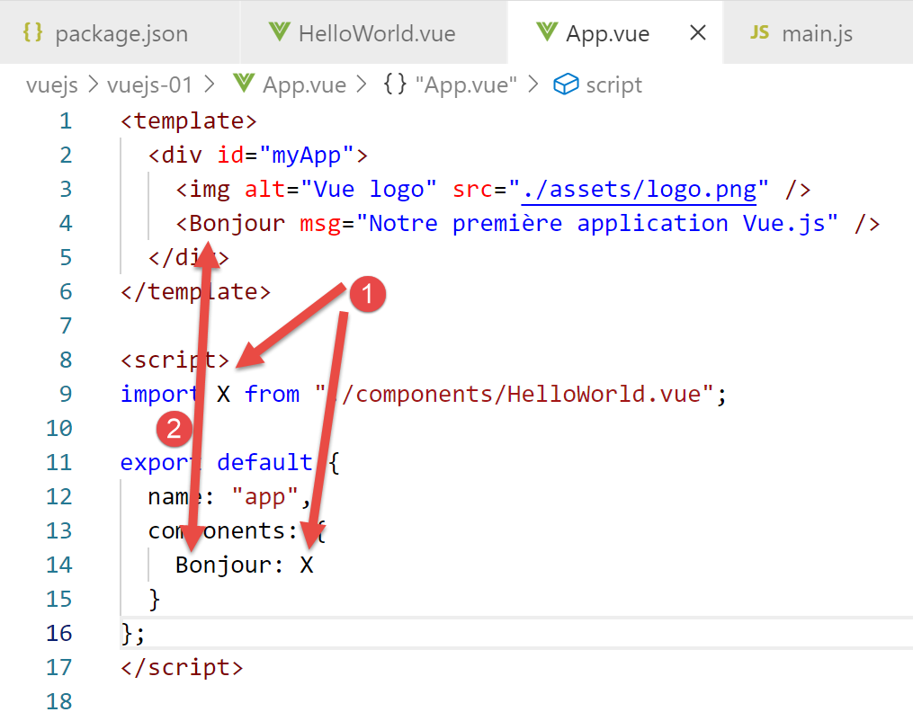

3. 项目 [vuejs-01]：基础篇
为阐明 [vuejs-00] 中执行的代码，我们将在 [vuejs-01] 中对其进行简化。我们将 [vuejs-00] 文件夹复制到 [vuejs-01] 中：

[vuejs-01] 项目主要由四个文件组成：
- [main.js] [2] 是项目的入口点；
- [App.vue, HelloWorld.vue] [3-4] 是 [Vue.js] 组件，可选地包含以下元素：
- [<template>...</template>]: HTML 代码；
- [<script>...</script>]：与 HTML 代码关联的 JavaScript 代码；
- [<style>...</style>]: 与 HTML 代码关联的 CSS 样式；
- [public/index.html] [5]：由 [npm run serve] 命令显示的 HTML 文档；
项目运行时显示的 [public/index.html] 文件是这个：
<!DOCTYPE html>
<html lang="en">
<head>
<meta charset="utf-8">
<meta http-equiv="X-UA-Compatible" content="IE=edge">
<meta name="viewport" content="width=device-width,initial-scale=1.0">
<link rel="icon" href="<%= BASE_URL %>favicon.ico">
<title>vuejs</title>
</head>
<body>
<noscript>
<strong>We're sorry but vuejs doesn't work properly without JavaScript enabled. Please enable it to continue.</strong>
</noscript>
<div id="app"></div>
<!-- built files will be auto injected -->
</body>
</html>
因此，此 HTML 文件不会静态显示任何内容。这里没有 HTML 代码。 显示内容是动态生成的：项目的 JavaScript 代码将生成 HTML，并完全替换第 14 行中的 [<div id=’app’>] 标签。由项目 JavaScript 生成并插入到第 14 行 [<div>] 标签位置的 HTML 代码，来源于 [vue.js] 组件的 [template] 标签，即那些带有 [.vue] 后缀的文件。
以下 [vuejs-01/main.js] 脚本会在第 14 行动态插入 HTML 代码：
// imports
import Vue from 'vue'
import App from './App.vue'
// configuration
Vue.config.productionTip = false
// instanciation projet [App]
new Vue({
render: h => h(App),
}).$mount('#app')
评论
- 第 2 行：[Vue] 对象由 [vue.js] 框架提供；
- 第 3 行：[App] 对象由 [vuejs-01/App.vue] 文件提供；
- 第 6 行：[Vue] 对象的配置；
- 第 9–11 行：这些行负责：
- 生成应用程序的 HTML 代码。第 10 行：由 [App.vue] 文件生成；
- 将第 10 行生成的 HTML 代码加载到 [public/index.html] 文件的 [<div id='app'></div>] 部分中；
任何 [Vue.js] 项目均可保留 [index.html] 文件的原始状态。
初始 [vuejs-00] 项目中的 [App.vue] 文件在 [vuejs-01] 项目中简化如下：
<template>
<div id="myApp">
<img alt="Vue logo" src="./assets/logo.png" />
<HelloWorld msg="Notre première application Vue.js" />
</div>
</template>
<script>
import HelloWorld from "./components/HelloWorld.vue";
export default {
name: "app",
components: {
HelloWorld
}
};
</script>
评论
- 一个 [.vue] 片段最多由三个部分组成：
- [<template>...</template>] : HTML 代码；
- [<script>...</script>] : 与 HTML 代码相关的 JavaScript 代码；
- [<style>...</style>]：与 HTML 代码相关的 CSS 样式；
这里没有 [style] 部分。
- 第 1–6 行：片段（页面、组件、视图等）的 HTML 代码；
- 第 2–5 行：[template] 部分只能包含一个元素。我们通常放置一个 [div] 部分，以包含片段的所有 HTML 内容。我们也可以放置一个 <template> 标签；
- 第 3 行：一张图片；

- 第 4 行：一个名为 [HelloWorld] 的组件。[Vue.js] 的原理是使用在 [.vue] 文件（如这里的 [App.vue]）中定义的片段来构建网页。该组件由关联 JavaScript 脚本第 9 行定义的 [HelloWorld.vue] 文件定义；
- 第 4 行：组件可以接受参数。这里的参数是 [msg] 属性；
- 第 8–17 行：片段（或组件）的 JavaScript 脚本；
- 第 9 行：要在 [App] 组件内使用 [HelloWorld] 组件，必须将其定义导入到 [script] 部分；
- 第 11–16 行：脚本定义了一个对象并将其导出，以便外部使用；
- 第 12 行：[name] 属性定义了导出组件的名称；
- 第 13–15 行：[components] 属性列出了 [App] 组件所使用的组件。这些组件将与其一同导出；
第 9 行：[HelloWorld] 组件的名称不必与定义它的文件名称相同。它可以被导入为 [X]，并作为 [Bonjour] 组件导出：

- 第 14 行：[X] 组件以 [Bonjour] 这个名称导出。随后在第 4 行中，它便以该名称被调用；
第一种写法最为常见，因此我们将采用这种方式定义组件；
<template>
<div id="myApp">
<img alt="Vue logo" src="./assets/logo.png" />
<HelloWorld msg="Notre première application Vue.js" />
</div>
</template>
<script>
import HelloWorld from "./components/HelloWorld.vue";
export default {
name: "app",
components: {
HelloWorld
}
};
</script>
第 14 行是代码 [HelloWorld : HelloWorld] 的简写形式：[HelloWorld] 组件（位于右侧，在第 9 行导入）以 [HelloWorld]（位于左侧）为名进行导出。

我们将 [HelloWorld.vue] 组件简化如下：
<template>
<div>
<h1>{{ msg }}</h1>
</div>
</template>
<script>
export default {
name: "HelloWorld",
props: {
msg: String
}
};
</script>
评论
- [HelloWorld] 组件的文件结构与主 [App] 组件相同；
- 第 3 行：此处评估一个 JavaScript 表达式，本例中为表达式 [msg]；
- 第 10–12 行：定义组件的属性，更具体地说，是其参数。当 [App] 组件实例化 [HelloWorld] 组件时，它使用了以下语法：
<HelloWorld msg="Notre première application Vue.js" />
通过为参数（属性）[msg] 赋值来实例化 [HelloWorld] 组件。如果查看 [HelloWorld] 组件的 [template]，其内容如下：
<div>
<h1>Notre première application Vue.js</h1>
</div>
- 第 7–14 行：组件的属性定义为一个对象并被导出；
- 第 9 行：组件以 [HelloWorld] 为名导出；
- 第 10–12 行：其参数由 [props] 属性定义；
最终，如果将所使用的两个组件 [App] 和 [HelloWorld] 的模板组合起来，显示的 [index.html] 文件将如下所示：
<!DOCTYPE html>
<html lang="en">
<head>
<meta charset="utf-8">
<meta http-equiv="X-UA-Compatible" content="IE=edge">
<meta name="viewport" content="width=device-width,initial-scale=1.0">
<link rel="icon" href="<%= BASE_URL %>favicon.ico">
<title>vuejs</title>
</head>
<body>
<noscript>
<strong>We're sorry but vuejs doesn't work properly without JavaScript enabled. Please enable it to continue.</strong>
</noscript>
<div id="myApp">
<img alt="Vue logo" src="./assets/logo.png" />
<div>
<h1>Notre première application Vue.js</h1>
</div>
</div></body>
</html>
我们通过修改 [package.json] 文件中的 [serve] [1] 命令来启动应用程序：

随后显示的页面是 [2]。
现在让我们看看该页面的代码：

- 在 [1] 处右键单击；
- 在[2]处，即页面的源代码。我们可以看到，这是最初[index.html]文件中的代码，但这并非实际显示的内容。确实，最初加载的是[index.html]页面。随后，JavaScript代码动态修改了该页面，但我们并未看到这一过程；
当页面由 JavaScript 动态生成时，选项 [2] 便无用武之地。您必须进入浏览器开发者工具（Firefox 中按 F12）才能查看当前显示页面的代码：

- 在 [1] 中，是显示文档的 DOM（文档对象模型）检查器；
- [2] 显示该 DOM 实际包含的内容；
- [3-4]，我们将用于查看 [Vue.js] 框架所用 JavaScript 对象的工具；
- [4] 是一个用于调试 [Vue.js] 应用程序的扩展程序（此处为 Firefox 版）：
- 适用于 Firefox：[https://addons.mozilla.org/fr/firefox/addon/vue-js-devtools/]；
- 适用于 Chrome：[https://chrome.google.com/webstore/detail/vuejs-devtools/nhdogjmejiglipccpnnnanhbledajbpd]；
让我们来看看 [Vue] 选项卡 [4]：

[1-4] 视图展示了文档的 [Vue.js] 结构：文档根目录 [2]（index.html）包含 [App] 组件（3），而 [App] 组件又包含 [HelloWorld] 组件（4）。点击 [4] 可显示 [HelloWorld] 组件的属性 [5]。
在 [4]（右侧）处，我们可以看到 [$vm0] 标记。这是我们在 JavaScript 控制台 [6] 中用于引用 [HelloWorld] 对象的变量名。让我们试一试：

- 在 [2] 中，我们求值表达式 [$vm0]，从而显示其结构。通常情况下，我们无需直接使用该结构；
最后，让我们演示一下用于运行项目的 [serve] 命令的 [热重载] 功能：
- 在 [App.vue] 中，将显示的消息更改为 [HelloWorld]：

- 在 [1] 中，我们修改了显示的消息；
- 在 [2-3] 中，页面会自动更新，无需我们进行任何操作；
接下来，我们将创建多个 [vuejs-xx] 项目，以演示 [Vue.js] 的关键特性。这里所说的“关键”，指的是“我们在税务计算服务器的 [Vue.js] 客户端中会用到的特性”。如果某些“关键”特性在客户端中未被使用，我们将予以省略。因此，本文并非旨在全面介绍 [Vue.js]。